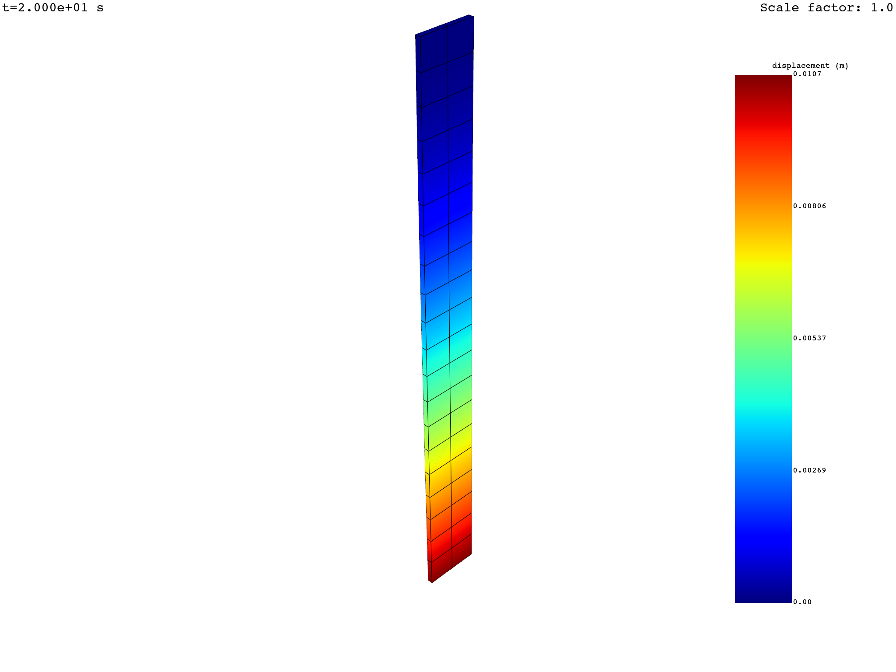
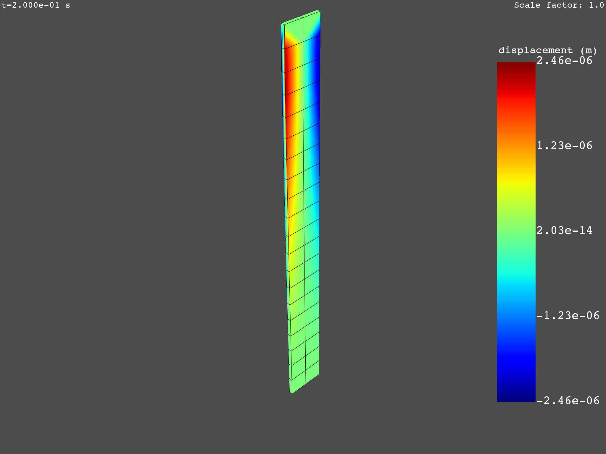

Note
Go to the end to download the full example code.
Postprocess a transient mechanical simulation with animation#
This example shows how to postprocess a transient mechanical simulation with animation to extract results like displacement, stress, and strain. It also shows how to extract data for chosen time steps and animate the strain equivalence over all times.
Perform required imports#
Perform required imports. This example uses a supplied file that you can
get by importing the DPF examples package.
from ansys.dpf import post
from ansys.dpf.post import examples
Get Simulation object#
Get the Simulation object that allows access to the result. The Simulation
object must be instantiated with the path for the result file. For example,
"C:/Users/user/my_result.rst" on Windows or "/home/user/my_result.rst"
on Linux.
example_path = examples.find_msup_transient()
# to automatically detect the simulation type, use:
simulation = post.load_simulation(example_path)
# to enable auto-completion, use the equivalent:
simulation = post.TransientMechanicalSimulation(example_path)
# print the simulation to get an overview of what's available
print(simulation)
Transient Mechanical Simulation.
Data Sources
------------------------------
/opt/hostedtoolcache/Python/3.10.19/x64/lib/python3.10/site-packages/ansys/dpf/core/examples/result_files/msup_transient_plate1.rst
DPF Model
------------------------------
Transient analysis
Unit system: MKS: m, kg, N, s, V, A, degC
Physics Type: Mechanical
Available results:
- node_orientations: Nodal Node Euler Angles
- displacement: Nodal Displacement
- velocity: Nodal Velocity
- acceleration: Nodal Acceleration
- reaction_force: Nodal Force
- stress: ElementalNodal Stress
- elemental_volume: Elemental Volume
- stiffness_matrix_energy: Elemental Energy-stiffness matrix
- artificial_hourglass_energy: Elemental Hourglass Energy
- kinetic_energy: Elemental Kinetic Energy
- co_energy: Elemental co-energy
- incremental_energy: Elemental incremental energy
- thermal_dissipation_energy: Elemental thermal dissipation energy
- elastic_strain: ElementalNodal Strain
- elastic_strain_eqv: ElementalNodal Strain eqv
------------------------------
DPF Meshed Region:
393 nodes
40 elements
Unit: m
With solid (3D) elements
------------------------------
DPF Time/Freq Support:
Number of sets: 20
Cumulative Time (s) LoadStep Substep
1 0.010000 1 1
2 0.020000 1 2
3 0.030000 1 3
4 0.040000 1 4
5 0.050000 1 5
6 0.060000 1 6
7 0.070000 1 7
8 0.080000 1 8
9 0.090000 1 9
10 0.100000 1 10
11 0.110000 1 11
12 0.120000 1 12
13 0.130000 1 13
14 0.140000 1 14
15 0.150000 1 15
16 0.160000 1 16
17 0.170000 1 17
18 0.180000 1 18
19 0.190000 1 19
20 0.200000 1 20
Extract displacement#
You can extract displacement at all times or on a selection of time steps.
# query the displacement vectorial field for all times
displacement = simulation.displacement(all_sets=True)
print(displacement)
# animation shows the norm of vectorial fields with several components
displacement.animate(deform=True, title="U")
# get specific components with "components"
x_displacement = simulation.displacement(all_sets=True, components=["X"])
print(x_displacement)
x_displacement.animate(deform=True, title="UX")
# get the norm of a vectorial result with "norm=True"
displacement_norm = simulation.displacement(all_sets=True, norm=True)
print(displacement_norm)
displacement_norm.animate(deform=True, title="U norm")
# get the available time set ids in the simulation
print(simulation.set_ids)
# extract displacement on given time steps or select the times steps from the already evaluated
# displacement DataFrame
displacement = simulation.displacement(set_ids=simulation.set_ids[5:])
displacement = displacement.select(set_ids=simulation.set_ids[5:])
print(displacement)
- 
- 
results U (m) ...
set_ids 1 2 3 4 5 6 ...
node_ids components ...
9 X 1.6236e-14 8.6224e-14 2.1451e-13 3.6103e-13 4.9262e-13 5.7822e-13 ...
Y 1.4763e-04 5.8099e-04 1.2121e-03 1.9949e-03 2.7524e-03 3.1675e-03 ...
Z 1.9644e-06 9.6317e-06 2.2793e-05 3.8222e-05 5.2323e-05 6.1003e-05 ...
96 X 2.6765e-08 -4.9606e-08 -3.7405e-07 -6.8920e-07 -8.8899e-07 -1.1142e-06 ...
Y 1.4776e-04 5.8073e-04 1.2102e-03 1.9914e-03 2.7480e-03 3.1619e-03 ...
Z 1.9663e-06 9.6467e-06 2.2825e-05 3.8272e-05 5.2398e-05 6.1085e-05 ...
... ... ... ... ... ... ... ... ...
results U_X (m) ...
set_ids 1 2 3 4 5 6 ...
node_ids ...
9 1.6236e-14 8.6224e-14 2.1451e-13 3.6103e-13 4.9262e-13 5.7822e-13 ...
96 2.6765e-08 -4.9606e-08 -3.7405e-07 -6.8920e-07 -8.8899e-07 -1.1142e-06 ...
95 2.9067e-08 -2.1748e-08 -3.0981e-07 -5.8388e-07 -7.3503e-07 -9.4097e-07 ...
10 1.9354e-14 1.0285e-13 2.5600e-13 4.3087e-13 5.8790e-13 6.9009e-13 ...
30 1.3959e-14 7.4010e-14 1.8369e-13 3.0883e-13 4.2175e-13 4.9490e-13 ...
68 -2.6765e-08 4.9606e-08 3.7405e-07 6.8920e-07 8.8899e-07 1.1142e-06 ...
... ... ... ... ... ... ... ...
results U_N (m) ...
set_ids 1 2 3 4 5 6 ...
node_ids ...
9 1.4764e-04 5.8107e-04 1.2123e-03 1.9952e-03 2.7529e-03 3.1680e-03 ...
96 1.4777e-04 5.8081e-04 1.2104e-03 1.9918e-03 2.7485e-03 3.1625e-03 ...
95 1.6695e-04 6.7794e-04 1.4446e-03 2.3856e-03 3.2866e-03 3.7912e-03 ...
10 1.6681e-04 6.7805e-04 1.4462e-03 2.3885e-03 3.2903e-03 3.7959e-03 ...
30 1.4764e-04 5.8107e-04 1.2123e-03 1.9952e-03 2.7529e-03 3.1680e-03 ...
68 1.4777e-04 5.8081e-04 1.2104e-03 1.9918e-03 2.7485e-03 3.1625e-03 ...
... ... ... ... ... ... ... ...
[1, 2, 3, 4, 5, 6, 7, 8, 9, 10, 11, 12, 13, 14, 15, 16, 17, 18, 19, 20]
results U (m) ...
set_ids 6 7 8 9 10 11 ...
node_ids components ...
9 X 5.7822e-13 5.9149e-13 5.3316e-13 4.1647e-13 2.7073e-13 1.3329e-13 ...
Y 3.1675e-03 3.2277e-03 2.9633e-03 2.3102e-03 1.5053e-03 8.1690e-04 ...
Z 6.1003e-05 6.2516e-05 5.6466e-05 4.4106e-05 2.8780e-05 1.4367e-05 ...
96 X -1.1142e-06 -1.1700e-06 -9.7434e-07 -7.7403e-07 -5.1423e-07 -1.5231e-07 ...
Y 3.1619e-03 3.2218e-03 2.9585e-03 2.3064e-03 1.5027e-03 8.1613e-04 ...
Z 6.1085e-05 6.2600e-05 5.6545e-05 4.4166e-05 2.8819e-05 1.4388e-05 ...
... ... ... ... ... ... ... ... ...
Extract strain#
You can extract strain at all times or on a selection of time steps.
strain = simulation.elastic_strain_nodal(all_sets=True)
print(strain)
strain = simulation.elastic_strain_nodal(set_ids=simulation.set_ids[10:])
print(strain)
results EPEL ...
set_ids 1 2 3 4 5 6 ...
node_ids components ...
9 XX -5.1055e-07 1.0529e-06 7.5275e-06 1.3842e-05 1.7878e-05 2.2371e-05 ...
YY -5.8226e-07 8.7907e-07 7.4010e-06 1.3689e-05 1.7612e-05 2.2143e-05 ...
ZZ 1.8693e-06 -3.1040e-06 -2.4796e-05 -4.5782e-05 -5.8972e-05 -7.4037e-05 ...
XY 1.1102e-16 2.2812e-16 4.7184e-16 7.9103e-16 1.3323e-15 1.2212e-15 ...
YZ -3.7610e-09 -5.8703e-08 -1.2875e-07 -2.0941e-07 -3.1235e-07 -3.4685e-07 ...
XZ -1.0658e-14 -5.6843e-14 -1.1369e-13 -1.7053e-13 -3.4106e-13 -3.4106e-13 ...
... ... ... ... ... ... ... ... ...
results EPEL ...
set_ids 11 12 13 14 15 16 ...
node_ids components ...
9 XX 3.1091e-06 -1.7232e-07 -5.0382e-07 -3.0068e-08 4.7140e-06 1.1642e-05 ...
YY 2.9312e-06 -2.7887e-07 -5.6070e-07 -1.7267e-07 4.5633e-06 1.1516e-05 ...
ZZ -9.9484e-06 8.2313e-07 1.8122e-06 4.3304e-07 -1.5362e-05 -3.8511e-05 ...
XY 4.7184e-16 3.6082e-16 1.1102e-16 4.0246e-16 4.6491e-16 7.3552e-16 ...
YZ -8.3922e-08 -2.5142e-08 6.5868e-09 -3.7990e-08 -9.8658e-08 -1.7393e-07 ...
XZ -8.5265e-14 -2.1316e-14 -6.6613e-15 -4.2633e-14 -1.1369e-13 -1.7053e-13 ...
... ... ... ... ... ... ... ... ...
Animate strain eqvivalent over all times#
strain_eqv = simulation.elastic_strain_eqv_von_mises_nodal(all_sets=True)
strain_eqv.animate(deform=True, title="E_eqv")
Total running time of the script: (0 minutes 3.802 seconds)